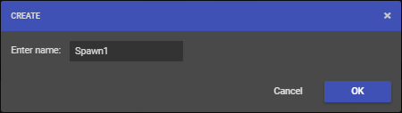
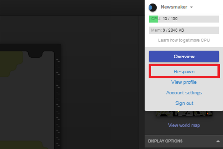
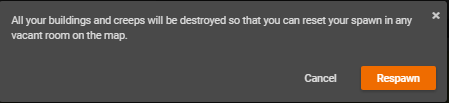

In Screeps, the game is never over, and a global win of any player is hardly ever possible. The game is devised in such a way that you can always continue playing, gain revenge, change landscape, save your achievements, etc.
Initial spawn
The game begins from your appearance on the map. You can choose any room with a neutral Controller and at least one energy source, although we recommend to choose a room with two sources and inside one of the Start Areas. So, after analyzing the landscape, place your spawn on the map:

Now the room is in Safe mode during 20,000 game ticks (approx. 15 hours depending on the tick duration). Use this period to explore the room, develop, plan defenses, and prepare for capturing territory and resources.
When the spawn is placed, it has 300 energy units first. For your safety, the spawn is constantly refilled with a small amount of 1 energy unit per tick, so that you won't stuck without energy.
A spawn stops to generate energy when there are 300 energy units in the spawn itself or any other spawns and extensions in the room.
Respawn
If you have chosen hastily and now want to move to a more interesting room, or if another player forced you to do so, you can restart the game with the help of the Respawn feature. It has a 180 seconds timeout. You will also need to respawn if your rooms are captured by an enemy and you don't have an extra foothold with creeps to build a spawn.


As you have already known from the article Control, a player's Global Control Level (GCL) remains the same after the Respawn. So, if you have a right to claim 3 rooms, you will never lose it.
Always try to control as many rooms as your GCL allows. It will allow your colony develop at the maximum speed. Even after a respawn from scratch, a high GCL will let you find a place with many free rooms and instantly claim some into your domain for parallel development.